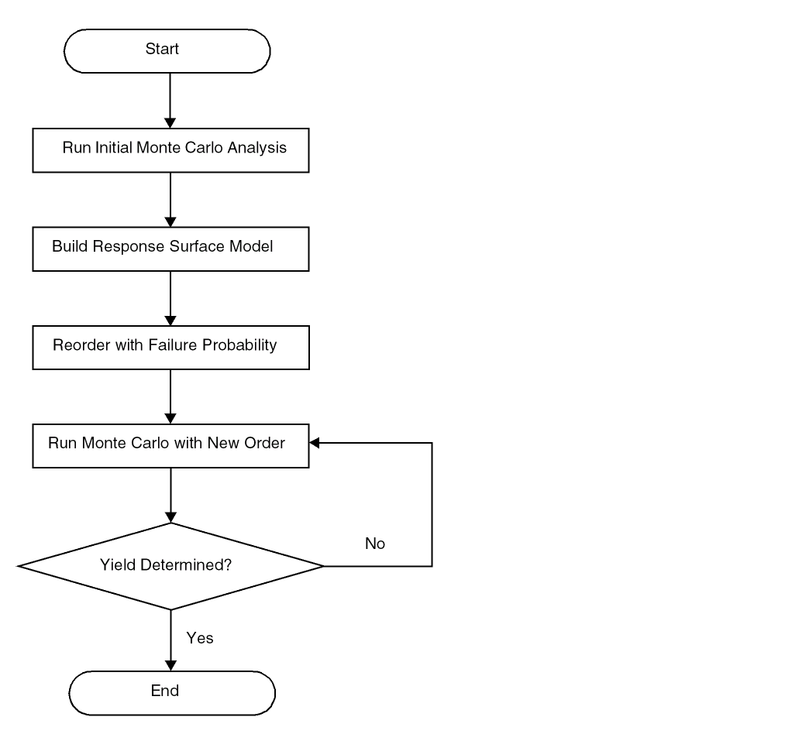

Workflow of the Yield Verification - Reorder Samples Method
In the Yield Verification - Reorder Samples method, the Monte Carlo samples are ordered from worst to best based on failure probability modeling. First, a small number of samples are simulated to fit into the model of performance and statistical variation. Then, the remaining Monte Carlo samples are generated, but not simulated. The samples are then reordered based on the performance model. After that, simulation begins with the samples that have the highest probability to fail.
The detailed steps are as follows:
- The run begins with an initial Monte Carlo sampling, in which a small number of samples are simulated in the normal order (a minimum of 50 samples). The Sensitivity Accuracy method is applied that stops simulating new Monte Carlo samples after enough data is available for accurate modeling.
- After the initial sampling and modeling is complete, the remaining samples are generated but not simulated. The total number of samples required for the run is determined automatically from the target yield and the probability requirements specified in the Monte Carlo form. For each of the remaining samples, the statistical parameter values are generated, and the samples are ordered using failure probability modeling.
-
Now, the Monte Carlo samples are simulated in the highest probability to fail order. The Monte Carlo run stops automatically in both cases—target yield is met or not met.
- When the yield is low, the failed samples are simulated first.
- When the yield is high, the run stops early when the specifications pass for the samples with high probability to fail. The remaining samples have very low probability to fail.
If the design has low yield, the failed samples are identified early, and the simulation run is stopped. On the other hand, if the design has high yield, it can be determined earlier that the yield target is met if the most probable to fail samples pass the specification. If these worst samples pass the specifications, the run stops early.
In both the cases, the run stops earlier than the traditional significance test method using a normal random sequence of samples. Significant time saving is observed in high yield cases, since the worst-case samples are simulated much earlier in the run.
The following figure shows the workflow of this method.

Related Topics
Running the Yield Verification - Reorder Sample Method
Return to top